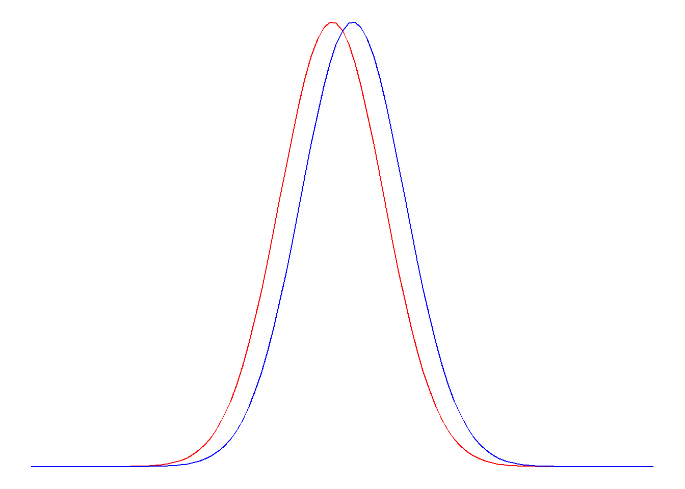
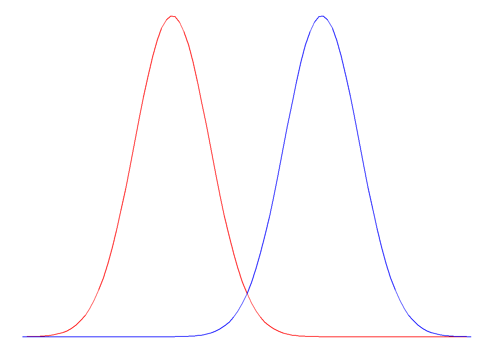
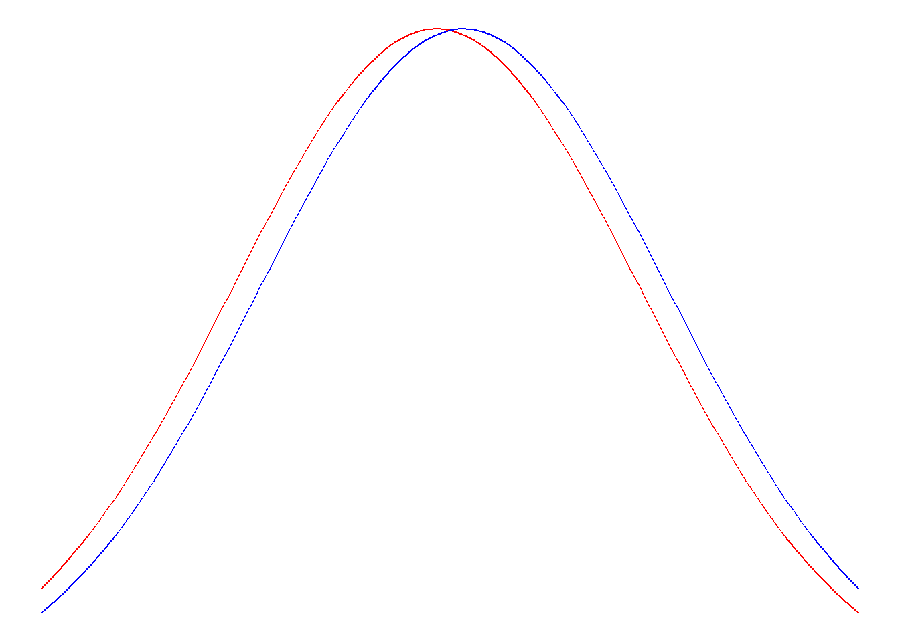
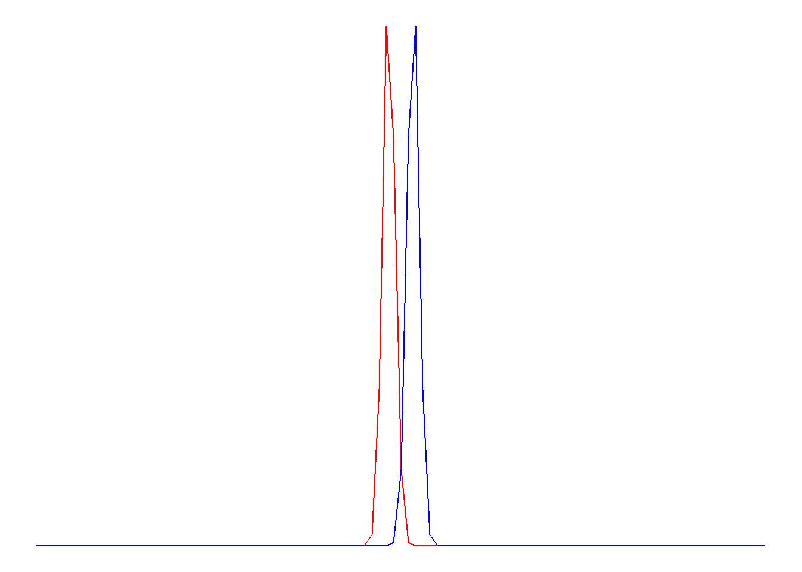

When we conduct a null-hypothesis significance test, we select the significance level \(\alpha\). Alpha is the probability of committing a Type I error (drawing a false-positive conclusion). Since we select the alpha level, it is known. If we use \(\alpha = .05\), that means that - by definition - we accept a 5% risk of committing a Type I error.
There is also the probability of committing a Type II error. This is called \(\beta\). We don’t know the value of \(\beta\) beforehand, but we can calculate it if we make some assumptions. The probability of committing a Type II error (drawing a false-negative conclusion) depends on a few factors:
How big the effect is
Big effects are harder to miss; imagine trying to detect a difference between two groups. If the mean of both groups is really close together, it will be harder to detect a difference (see below):
library(ggplot2)ggplot(data =data.frame(x =c(-6, 6)), aes(x)) +stat_function(fun = dnorm, n =101, args =list(mean =-.2, sd =1), color ="red") +stat_function(fun = dnorm, n =101, args =list(mean = .2, sd =1), color ="blue") +theme_void()

library(ggplot2)ggplot(data =data.frame(x =c(-6, 6)), aes(x)) +stat_function(fun = dnorm, n =101, args =list(mean =-2, sd =1), color ="red") +stat_function(fun = dnorm, n =101, args =list(mean =2, sd =1), color ="blue") +theme_void()

Figure 1: ?(caption)
How big the sample is
Large samples make it easier to detect smaller effects; imagine that the two distributions below are sampling distributions for two groups with very small sample sizes (left) and very large sample sizes (right):
library(ggplot2)ggplot(data =data.frame(x =c(-6, 6)), aes(x)) +stat_function(fun = dnorm, n =101, args =list(mean =-.2, sd =3), color ="red") +stat_function(fun = dnorm, n =101, args =list(mean = .2, sd =3), color ="blue") +theme_void()

library(ggplot2)ggplot(data =data.frame(x =c(-6, 6)), aes(x)) +stat_function(fun = dnorm, n =101, args =list(mean =-.2, sd = .1), color ="red") +stat_function(fun = dnorm, n =101, args =list(mean = .2, sd = .1), color ="blue") +theme_void()

Figure 2: ?(caption)
How ‘noisy’ the data are
The standard deviation is a measure of how “noisy” the data are. If observations are very spread out (high standard deviation), it will be harder to detect small differences. Consider that a small difference between two groups would be hard to detect if the two groups overlapped very much (= high standard deviation). Look at the same picture from the previous point (sample size); it illustrates this principle. The reason that both sample size and “noise in the data” have an impact on the probability of committing a Type II error is because they are used to calculate the standard error:
\[
SE_M = \frac{SD}{\sqrt{n}}
\]
Power of a Test
The “power” of a test is the probability that it will correctly detect a true effect of a specific size. Since \(\beta\) is the probability of missing a true effect, it follows that \(1-\beta\) must be the probability of detecting a true effect, or the power.
As explained in the previous paragraph, we must know a few pieces of information to be able to calculate \(\beta\):
Effect size
Sample size
Standard deviation
When we conduct a study, we often know the sample size and standard deviation. The effect size is unknown, but we can assume a specific effect size. Think of this as an “informative” alternative hypothesis. The standard alternative hypothesis in null-hypothesis significance testing is just “anything that’s not the null hypothesis”. So if \(H_0: \mu = 0\), then \(H_a: \mu \neq 0\). Now, we must specify an exact value. For example, we could choose the smallest effect size of interest as the alternative hypothesis: Let’s say we’d be interested in a mean value of \(\mu = 0.2\). Then we could set our informative alternative hypothesis as \(H_i: \mu = 0.2\).
Now we have all the information needed to calculate the power of the test. To do so, we draw two sampling distributions (see illustration below): One (in red) centered around the null hypothesis, \(H_0: \mu = 0\), and one centered around the informative alternative hypothesis, \(H_i: \mu = 0.2\). We find the critical value in the red distribution around the null hypothesis; remember that \(\alpha\) is the 5% of probability in the right tail of the red distribution. But we can now also calculate \(\beta\), the unknown probability in the tail of the blue distribution to the left of the critical value. If the informative alternative hypothesis is true, then this is the probability of failing to detect that true effect. Although this example has no numeric values, we see that the blue shaded area representing \(\beta\) is slightly smaller than the red shaded area representing \(\alpha\), so the probability of committing a Type II error must be less than .05, and therefore the power \(1-\beta\) must be greater than 95%! If our assumptions are correct, we’d be really well able to detect a true effect of the size specified under \(H_i\).
Now, let’s calculate this by hand. Imagine that last year’s average grade was \(M = 5\), with a standard deviation of \(SD = 1.5\). This year, we have 73 students. We’ve made some changes to the teaching material, and we hope to reach an average grade of \(M = 6\).
Assume that the standard deviation this year will be the same as last year, and calculate the power of being able to detect a mean grade of \(H_i: \mu = 6\) when the null hypothesis is that the mean grade is the same as last year, \(H_0: \mu = 5\).
Step 1: Calculate the SE
We calculate the SE as \(SE = \frac{SD}{\sqrt{n}} = \frac{1.5}{\sqrt{73}} = 0.18\)
Step 2: Calculate Critical Value
The critical value is the boundary that corresponds to \(\alpha = .05\) in the distribution centered around \(H_0\). Looking at the t- or Z-table (because sample size is >>30), we see that this corresponds to a Z-value of about 1.64.
Converting this back to a score on the grades scale, we get:
Now, we just need to get the left-tail probability for that critical value, in the blue distribution. Convert that critical value back to a Z-value, but now in the blue distribution which is centered around \(\mu_{H_i} = 6\):